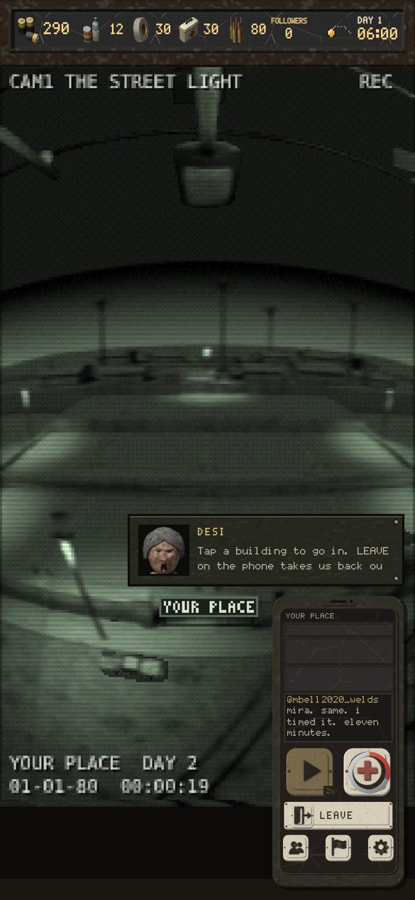
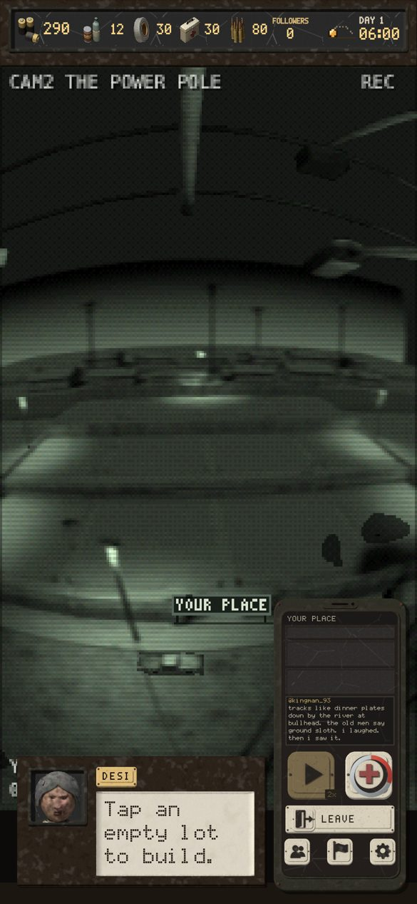
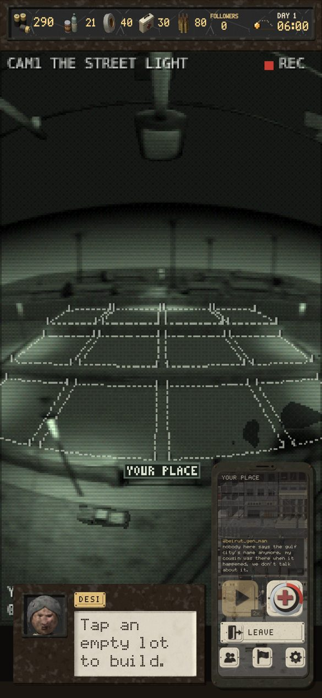
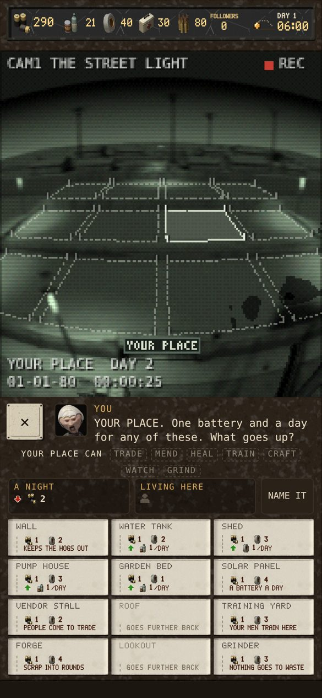
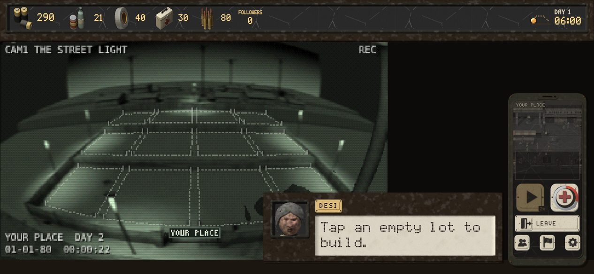
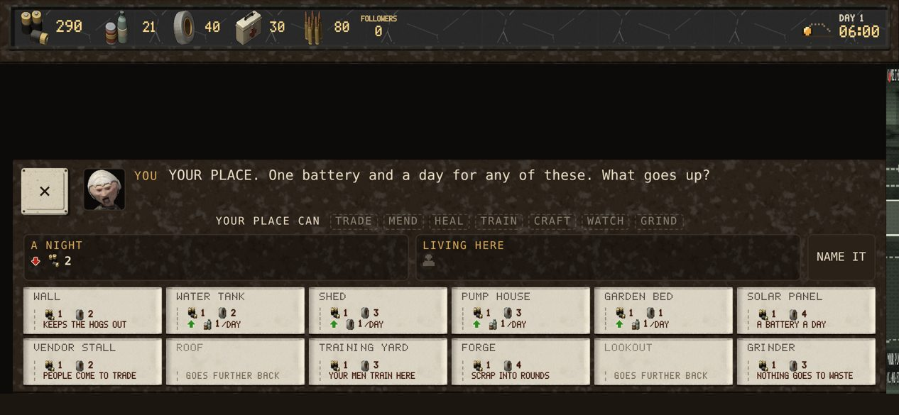
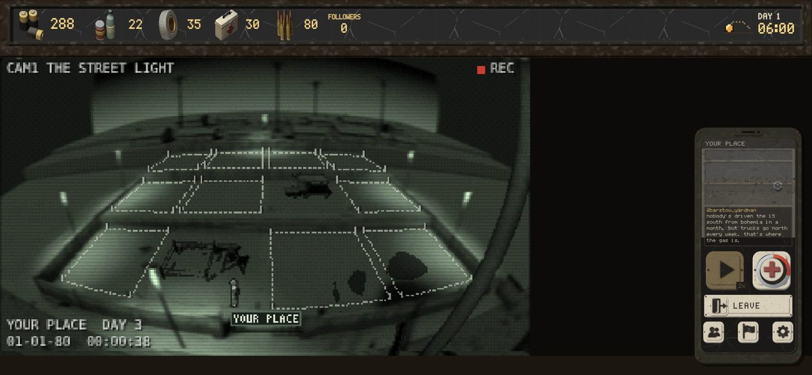

tank and yard bought: taped off for the night
next morning: standing where you put them
One camera now, and it never moves on its own. Every plot is painted on the ground. Tap a plot, pick what goes up, and it goes up on that plot. It's taped off overnight, and in the morning it stands.
No plots drawn anywhere. Every 20 seconds it cut to another camera, then zoomed in on its own.








Next: the same camera with as many pixels as the loading screens, and your people walking around it.